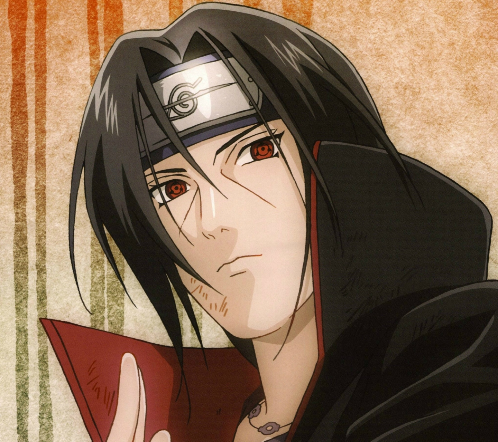

Итачи
Итачи Учиха — шиноби отступник, бывший член Анбу, был гением клана Учиха из Скрытого Листа. В молодости Итачи стал международным преступником, уничтожив весь свой клан, оставив в живых лишь своего младшего брата Саске. Впоследствии Итачи присоединился к международной преступной организации, Акацуки, деятельность которой порой приводила его к конфликтам с ниндзя Листа, включая Саске, стремящегося отомстить за свой клан. После смерти Итачи, выяснилось, что его мотивы были куда более сложными, чем казалось изначально — он верил, что все его действия были направлены на благо Саске и Конохи, и он оставался предан Скрытому Листу до самого конца.
